Working with geometric relationships
Geometric relationships control the orientation of an element with respect to another element or reference plane. For example, you can define a tangent relationship between a line and an arc. If the adjoining elements change, the tangent relationship is maintained between the elements.
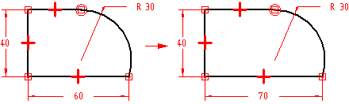
Geometric relationships control how a sketch changes when edits are made. IntelliSketch displays and places geometric relationships as you draw. After you complete the sketch, you can use the various relationship commands and the Relationship Assistant to apply additional geometric relationships.
Relationship handles
Relationship handles are symbols used to represent a geometric relationship between elements, keypoints, and dimensions, or between keypoints and elements. The relationship handle shows that the designated relationship is being maintained.
|
Relationship |
Handle |
|---|---|
|
Collinear |
|
|
Connect (1 degree of freedom) |
 |
|
Connect (2 degrees of freedom) |
 |
|
Concentric |
|
|
Equal |
 |
|
Horizontal/Vertical |
 |
|
Tangent |
 |
|
Tangent (Tangent + Equal Curvature) |
 |
|
Tangent (Parallel Tangent Vectors) |
|
|
Tangent (Parallel Tangent Vectors + Equal Curvature) |
 |
|
Symmetric |
 |
|
Parallel |
 |
|
Perpendicular |
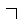 |
|
Fillet |
|
|
Chamfer |
|
|
Link (local) |
|
|
Link (peer-to-peer) |
 |
|
Link (sketch to sketch) |
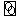 |
|
Rigid Set (2-D elements) |
In some cases, more than one relationship may be required and displayed at the same location on the profile. For example, a connect relationship and a tangent relationship can be used where an arc meets a line.
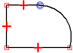
Displaying parents for a relationship
When modifying a profile or sketch, it can be useful to determine the parent elements for a relationship. When you select a geometric relationship, the parents highlight. For example, when you select the horizontal relationship shown in the first illustration, the left vertical line and the circle are highlighted as the parent elements.
This can be useful when multiple relationships are in the same location and you need to delete one relationship. In this situation, you can use QuickPick to highlight the relationship, and the parent elements are displayed using a dashed line style.
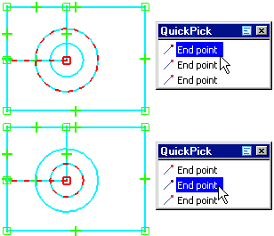
Collinear
The Collinear command forces two lines to be collinear. If the angle of one of the lines changes, the second line changes its angle and position to remain collinear with the first.
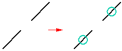
Connect
The Connect command joins a keypoint on one element to another element, or element keypoint. For example, you can apply a connect relationship between the endpoints of two elements. Establishing a connect relationship between element endpoints helps you draw a closed sketch. The symbol for connected endpoints displays a dot at the center of a rectangle.
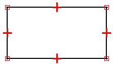
You can also use the Connect command to connect the endpoint of an element to any point on another element, not necessarily an endpoint or keypoint. This is called a point-on-element connection, and the symbol resembles an X. For example, the endpoint of the top horizontal line on the right side of the profile is connected to the vertical line, but not at an endpoint.
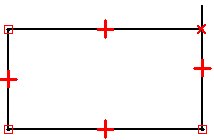
When drawing profiles, pay close attention to the relationship indicator symbols that IntelliSketch displays, and try to draw the elements as accurately as possible. Otherwise, you may accidentally apply a connect relationship in the wrong location, which can result in an invalid profile. For example, for a base feature you may accidentally create an open profile, rather than the required closed profile.
Tangent
The Tangent command maintains tangency between two elements or element groups.
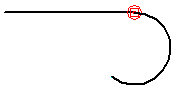
When you apply a tangent relationship, you can use the Tangent command bar to specify the type of tangent relationship you want:
-
Tangent
-
Tangent + Equal Curvature
-
Parallel Tangent Vectors
-
Parallel Tangent Vectors + Equal Curvature
A simple tangent relationship is useful when you want a line and an arc, or two arcs to remain tangent. The other options are useful in situations where a b-spline curve must blend smoothly with other elements. The Tangent + Equal Curvature, Parallel Tangent Vectors, and Parallel Tangent Vectors + Equal Curvature options require that the first element you select is a b-spline curve.
You can also apply a tangent or connect relationship to an end-point connected series of elements to define a profile group. For more information on profile groups, see the Working with profile groups topic.
Perpendicular
The Perpendicular command maintains a 90-degree angle between two elements.
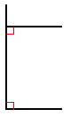
Horizontal/Vertical
The Horizontal/Vertical command works in two modes. In one mode, you can fix the orientation of a line as either horizontal or vertical by selecting any point on the line that is not an endpoint or a midpoint.
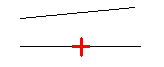
In the second mode, you can apply vertical/horizontal relationships between graphic elements by aligning their midpoints, center points, or endpoints so that their positions remain aligned with respect to each other.
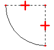
Equal
The Equal command maintains size equality between similar elements. When this relationship is applied between two lines, their lengths become equal. When applied between two arcs, their radii become equal.
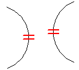
Parallel
The Parallel command makes two lines share the same angled orientation.
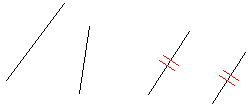
Concentric
The Concentric command maintains coincident centers for arcs and circles.
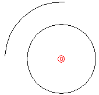
Symmetric
You can use the Symmetric command to make elements symmetric about a line or reference plane. The Symmetric command captures both the location and size of the elements.
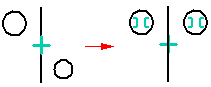
Rigid Set
You can use the Rigid Set command to add a rigid set relationship to a group of 2D elements.